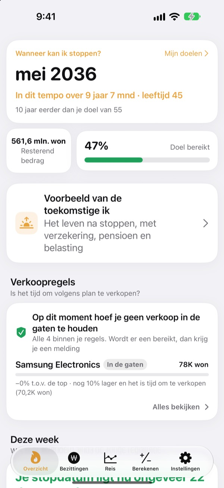
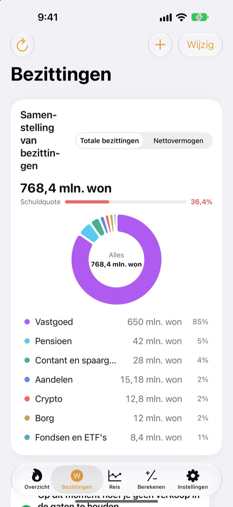
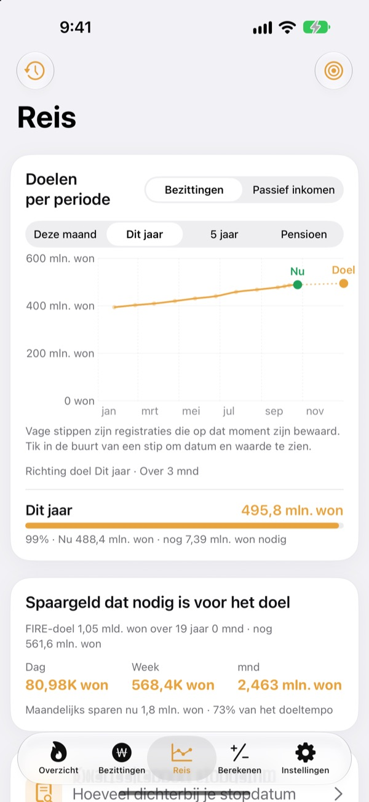
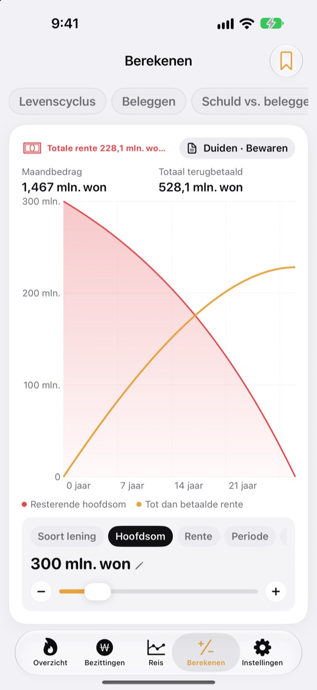

Wanneer kun je stoppen?
Zwart op wit.
Vul in wat je uitgeeft en wat je hebt gespaard, en je ziet de maand waarin je kunt stoppen. Elke keer dat je bezittingen veranderen, zie je of die datum dichterbij komt of verder weg schuift.
Geen account nodig. Je gegevens blijven op je toestel.

Bereken je stopdatum
Versleep de schuifjes. Het is dezelfde berekening als op het eerste scherm van de app.
Reken je nog steeds in je hoofd uit of je al kunt stoppen?
Als je bankrekening, beleggingsrekening, pensioen en borg allemaal op een andere plek staan, wordt zelfs je totaal vaag en blijft je stopdatum een gok. Toesagak zet alles op één scherm en rekent daaruit steeds opnieuw uit in welke maand je kunt stoppen.
Al je bezittingen op één scherm
Vastgoed, aandelen, fondsen en ETF's, pensioen, contant geld en deposito's, borgsommen, crypto en leningen, per soort gegroepeerd, met je totale bezittingen, nettovermogen en schuldquote.
Koersen van aandelen en crypto worden opgehaald zodat de waarden actueel blijven, en een screenshot van je beleggingsapp zet je posities en waarden er in één keer in.

Hoeveel per dag je nodig hebt
Zie deze maand, dit jaar, vijf jaar en je pensioen als doelen, samen met je eerdere registraties, in één grafiek. Je ziet ook hoeveel je per dag, week of maand moet sparen om op koers te blijven.
Veranderen je bezittingen, dan wordt de registratie van die week automatisch bewaard, zodat je geschiedenis zichzelf opbouwt.

Reken het door vóór grote keuzes
Rekenmachines voor je vermogensverloop over je leven, beleggen, aflossen of beleggen, leningen, sparen en deposito's, de koopkracht van je salaris en geld omgerekend naar uren. Versleep een waarde en de grafiek tekent zich opnieuw, met de vorige curve als stippellijn ernaast om te vergelijken.
Geef de scenario's waar je op terugkomt een naam en bewaar ze.

In drie stappen aan de slag
- 1
Vul je uitgaven en leeftijd in
Ruwe getallen zijn prima. Je stopdatum verschijnt meteen.
- 2
Voeg je bezittingen toe
Hoe preciezer je ze opsplitst, hoe scherper de datum.
- 3
Kijk af en toe even
Wekelijkse registraties bouwen zich vanzelf op, en de app kan je elke 1e van de maand een seintje geven.
Zo rekent de app
- Doel
- Een jaar aan uitgaven na je stoppen ÷ veilig opnamepercentage (bij 4% is dat 25 jaar aan uitgaven)
- Stopdatum
- De maand waarin je nettovermogen plus wat je maandelijks spaart, gegroeid met je verwachte rendement, je doel bereikt
- Totale bezittingen
- Alles wat je bezit bij elkaar opgeteld
- Nettovermogen
- Totale bezittingen min schulden zoals leningen
- Voortgang
- Nettovermogen ÷ doel. Je kunt het ook volgen op basis van passief inkomen
- Wat je kunt aanpassen
- Maandelijkse uitgaven, opnamepercentage van 2 tot 6%, verwacht rendement van 0 tot 12%, de leeftijd waarop je wilt stoppen
Alle uitkomsten zijn indicatieve berekeningen op basis van je invoer en geen beleggingsadvies.
Vragen
Waar worden mijn gegevens bewaard?
Alleen op je toestel. Je hoeft je niet aan te melden en er wordt niets naar de ontwikkelaar gestuurd. Zet iCloud-synchronisatie aan in Instellingen om dezelfde gegevens op je iPhone en iPad te zien via je eigen iCloud-account.
Koersen worden niet bijgewerkt.
Amerikaanse en Koreaanse aandelen, crypto en wisselkoersen werken zonder instellingen. Controleer je internetverbinding en of de ticker of code klopt. Woningprijzen komen uit Koreaanse openbare vastgoeddata en vereisen een gratis servicesleutel die je in Instellingen invult.
Wat is het verschil tussen totale bezittingen en nettovermogen?
Totale bezittingen is alles wat je bezit bij elkaar opgeteld. Nettovermogen is dat bedrag min schulden zoals leningen. Je stopdatum is gebaseerd op je nettovermogen.
Hoe zet ik mijn gegevens over naar een nieuw toestel?
Maak met Exporteren in Instellingen een back-upbestand, bewaar het in Bestanden, iCloud Drive of je e-mail en zet het terug op het nieuwe toestel. Back-upbestanden bevatten nooit API-sleutels. De app bewaart ook automatisch je 20 meest recente back-ups op het toestel.
Hoe werken verkoopmeldingen?
Stel per positie in hoeveel die mag dalen vanaf de piek, of kies een koersdoel. Gaat de koers over die grens, dan krijg je een seintje. Bij stijgende koersen blijft de app stil. Koersen worden gecontroleerd als je de app opent en wanneer iOS het op de achtergrond toestaat (meestal om de paar uur), dus het is geen realtime bewaking.
Kan ik mijn bedragen privé houden?
Zet App-vergrendeling aan in Instellingen om de app te openen met Face ID of je toegangscode. Met de vergrendeling aan toont ook de maandelijkse herinnering geen bedragen.
Kan ik eerst rondkijken?
Zet Demogegevens aan in Instellingen en bekijk alle schermen met de bezittingen van een fictief persoon. Zet je het uit, dan zijn je eigen gegevens meteen terug. Demogegevens zijn niet beschikbaar als iCloud-synchronisatie aan staat.
Hoe verwijder ik al mijn gegevens?
Als je de app verwijdert, worden alle gegevens op het toestel gewist. Wil je een kopie houden, exporteer dan eerst een back-upbestand in Instellingen.
Kan ik op basis van deze cijfers beleggen?
De uitkomsten van Toesagak zijn indicatieve berekeningen op basis van je invoer en een verondersteld rendement. Ze zijn geen beleggingsadvies, en de werkelijke uitkomst hangt af van de markt en je eigen situatie.
Fouten, ideeën of vragen? Mail naar leeo@kakao.com.